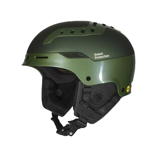

SKIGEEK

Switcher Mips Helmet
2499kr
PRODUCT DESCRIPTION
The Switcher helmet is an award-winning, groundbreaking and versatile all-mountain helmet. With 22 easily adjustable vents, no day will be too hot or too cold. Our Advanced Hybrid construction combines in-mold and hard shell technology to provide low weight and volume with extra reinforcement in critical areas. The shell construction combined with our unique Impact Shields liner offers optimal protection performance. Our Performance Interior with a magnetic chin buckle makes it easy to fasten, even wearing mittens or gloves. The Turn-Dial adjustment increases the adjustment span and is super easy to operate. This model is equipped with Mips, a technology that reduces rotational forces on the brain.
The Switcher helmet is an award-winning, groundbreaking and versatile all-mountain helmet. With 22 easily adjustable vents, no day will be too hot or too cold. Our Advanced Hybrid construction combines in-mold and hard shell technology to provide low weight and volume with extra reinforcement in critical areas. The shell construction combined with our unique Impact Shields liner offers optimal protection performance. Our Performance Interior with a magnetic chin buckle makes it easy to fasten, even wearing mittens or gloves. The Turn-Dial adjustment increases the adjustment span and is super easy to operate. This model is equipped with Mips, a technology that reduces rotational forces on the brain.
- Groundbreaking and award-winning hybrid helmet. Hybrid: combining a hardshell- and in-mold construction to optimize the performance.
- Our most advanced and versatile all-mountain helmet
- Impact Shields; our premium impact protection technology distributing impacts from the inside over a larger area in crucial zones
- Unique ventilation system. 22 vents easily adjustable to control the air-flow
- Comfortable interior, with easy turn-dial adjustment
- Magnetic buckle for safety and easy operation
- Listen to your favorite music with our Audio Ready system
- Lightweight
- Removable earpads
- Equipped with Mips, a technology that reduces rotational forces on the brain
AVAILABLE SIZES
S
M
L
XL